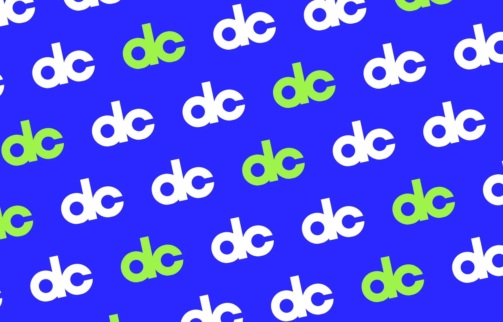
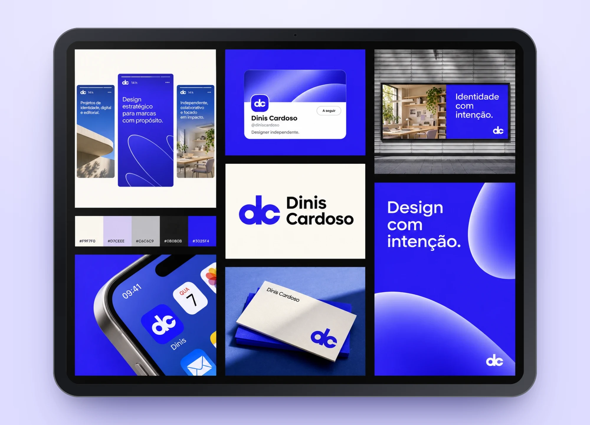
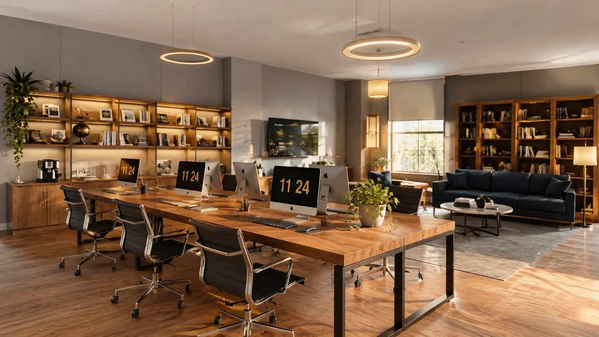
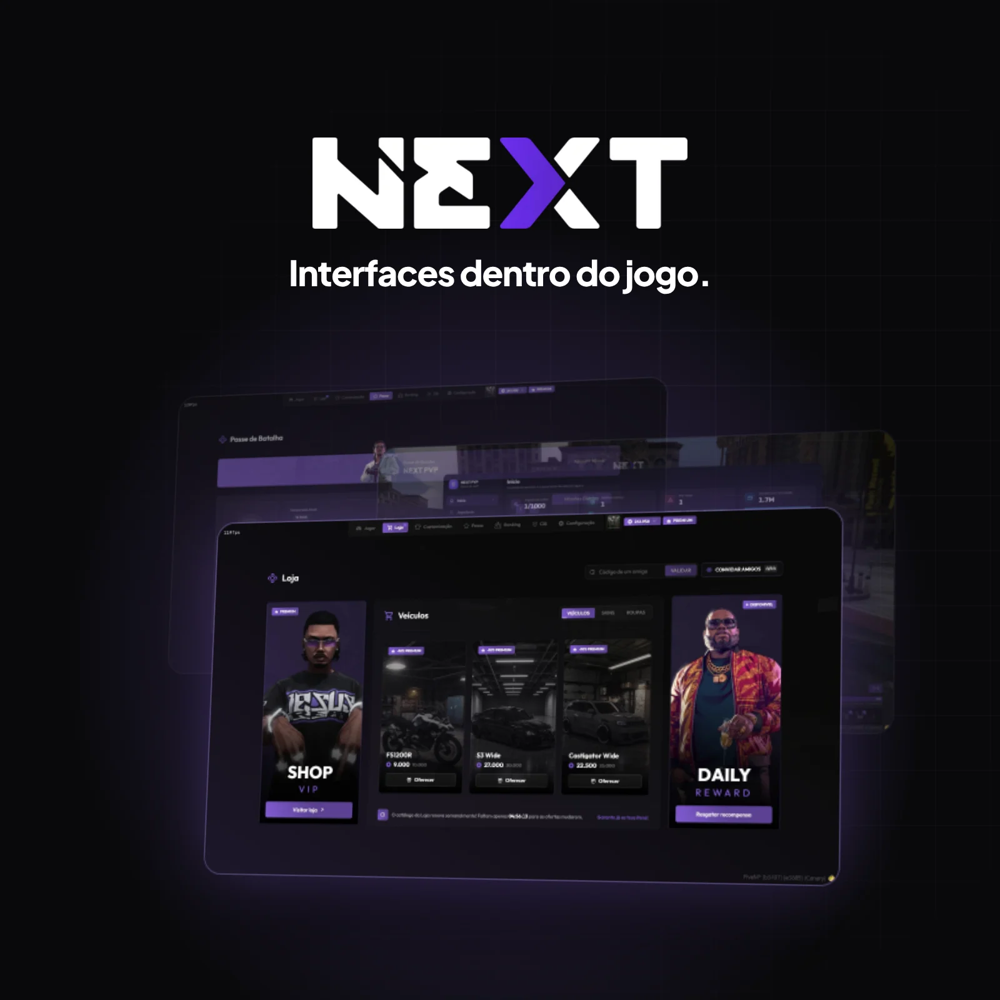
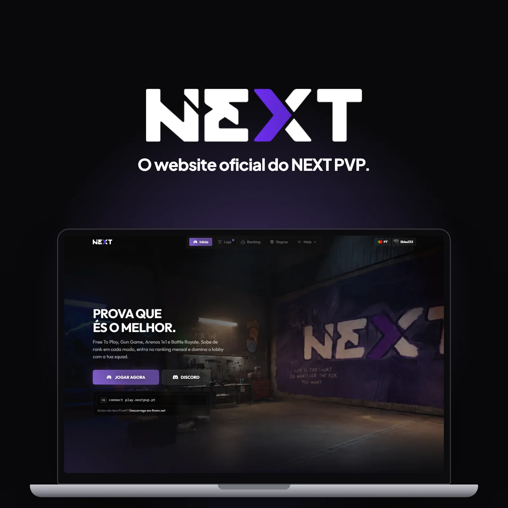

01
Problem
The closed d stands for the challenge: concrete, defined, to be understood before acting.
Personal brand

As a designer, I needed a signature that would identify me in everything I do — from my portfolio and CV to social media and a simple business card. The challenge was to sum up in a single symbol who I am and how I work: someone who sees every problem as the starting point of a solution. The result is the dc monogram, built from just two geometric shapes and one colour — easy to recognise and simple to apply on any medium.

“there are no problems, only solutions.”
The closed d stands for the challenge: concrete, defined, to be understood before acting.
The shared stem joins both letters: it is the thinking that turns one into the other.
The open c leaves room for the idea to come in and for the project to grow.
The logo joins the initials of Dinis Cardoso in a single stroke. The d is closed and stands for the problem: something concrete and well defined that has to be understood first. The c is open and stands for the solution: the space where the idea comes in. The vertical stem is shared by both letters and connects them — just like in my process, truly understanding the problem is what opens the way to the answer. Both letters are drawn from circles with the same diameter and stroke weight, so the monogram stays balanced, readable at small sizes and strong as an icon.



From the symbol I built a complete, consistent visual system: a palette rooted in blue, with deep and soft variations that add contrast without losing identity; two typefaces — Manrope, clear and modern, to communicate, and Caveat, handwritten, to give a voice to my motto; and logo versions for light backgrounds, dark backgrounds and photography, plus a seal and an icon. Applied to business cards, letterhead, posters, merchandise and social media, the brand stays recognisable in any context and reflects what I stand for as a designer: clear, well-built ideas with a purpose.


Brand identity and app for home and gym workouts.
2026
Creation of complete branding.
2020
Creation of the brand identity and visual communication.
2022
Creation of complete rebranding.
2025
Reorganization and redesign of the office area.
2022
In-game interface system for a FiveM server.
2025
Website and online store for the NEXT PVP server.
2026Have a project in mind? Let’s chat — I’m available for work in Lisbon and worldwide.